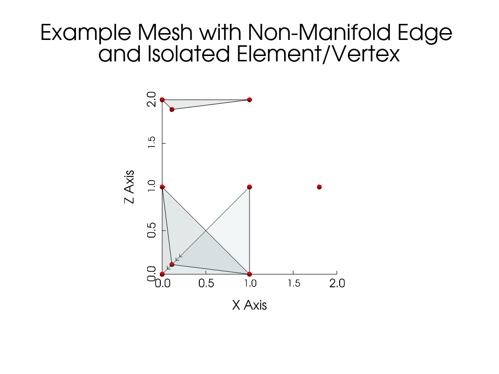

Note
Go to the end to download the full example code.
Adjacency matrix computation for meshes#
This example demonstrates a simple workflow for computing the vertices and elements adjacency matrices for a mesh using the pysdic library.
See also
pysdic.Mesh - Official documentation for the Mesh class.
Creating a Mesh#
Start by creating a mesh with triangle 3 elements.
The complete mesh is composed by :
a tetrahedral mesh at the origin.
an additional element connected to the tetrahedral mesh by two vertices, creating a non-manifold edge in the mesh.
an additional element not connected to the rest of the mesh, creating an isolated element in the mesh.
an additional vertex not connected to any element, creating an isolated vertex in the mesh.
import numpy as np
from pysdic import Mesh
points = np.array([
[0.0, 0.0, 0.0], # Vertex 0
[1.0, 0.0, 0.0], # Vertex 1
[0.0, 1.0, 0.0], # Vertex 2
[0.0, 0.0, 1.0], # Vertex 3
[1.0, 1.0, 1.0], # Vertex 4 (additional vertex for the non-manifold edge)
[0.0, 0.0, 2.0], # Vertex 5 (isolated element)
[1.0, 0.0, 2.0], # Vertex 6 (isolated element)
[0.0, 1.0, 2.0], # Vertex 7 (isolated element)
[2.0, 2.0, 1.0], # Vertex 8 (isolated vertex)
]) # (N_v=9, E=3)
elements = np.array([
[0, 1, 2], # Element 0 (tetrahedral mesh)
[0, 1, 3], # Element 1 (tetrahedral mesh)
[0, 2, 3], # Element 2 (tetrahedral mesh)
[1, 2, 3], # Element 3 (tetrahedral mesh)
[1, 2, 4], # Element 4 (additional element creating a non-manifold edge with vertices 1 and 2)
[5, 6, 7], # Element 5 (isolated element)
]) # (N_e=6, N_npe=3)
mesh = Mesh(
vertices=points,
connectivity=elements,
element_type="triangle_3"
)
Visualize the Mesh#
Visualize the mesh using the built-in visualization method with pyvista.
mesh.visualize(
show_edges=True,
edge_color="black",
show_vertices=True,
vertex_size=10,
vertex_color="red",
face_opacity=0.1,
title="Example Mesh with Non-Manifold Edge \nand Isolated Element/Vertex",
camera_position=[1.0, -8.0, 1.0],
camera_focal_point=[1.0, 1.0, 1.0],
camera_view_up=[0.0, 0.0, 1.0]
)

Compute the adjacency matrices#
Use the compute_vertices_adjacency_matrix and compute_elements_adjacency_matrix methods of the Mesh class
to compute the vertices and elements adjacency matrices, respectively.
vertices_adjacency_matrix = mesh.compute_vertices_adjacency_matrix()
elements_adjacency_matrix = mesh.compute_elements_adjacency_matrix()
print("Vertices adjacency matrix:")
print(vertices_adjacency_matrix)
print("Elements adjacency matrix:")
print(elements_adjacency_matrix)
Vertices adjacency matrix:
[[ 0 1 1 1 2 -1 -1 -1 -1]
[ 1 0 1 1 1 -1 -1 -1 -1]
[ 1 1 0 1 1 -1 -1 -1 -1]
[ 1 1 1 0 2 -1 -1 -1 -1]
[ 2 1 1 2 0 -1 -1 -1 -1]
[-1 -1 -1 -1 -1 0 1 1 -1]
[-1 -1 -1 -1 -1 1 0 1 -1]
[-1 -1 -1 -1 -1 1 1 0 -1]
[-1 -1 -1 -1 -1 -1 -1 -1 0]]
Elements adjacency matrix:
[[ 0 1 1 1 1 -1]
[ 1 0 1 1 1 -1]
[ 1 1 0 1 1 -1]
[ 1 1 1 0 1 -1]
[ 1 1 1 1 0 -1]
[-1 -1 -1 -1 -1 0]]
Example on a larger mesh#
from pysdic import create_triangle_3_heightmap
import time
surface_mesh = create_triangle_3_heightmap(
height_function=lambda x, y: 0.5 * np.sin(np.pi * x) * np.cos(np.pi * y),
x_bounds=(-1.0, 1.0),
y_bounds=(-1.0, 1.0),
n_x=50,
n_y=50,
)
t0 = time.perf_counter()
vertices_adjacency_matrix = surface_mesh.compute_vertices_adjacency_matrix(max_distance=10)
t1 = time.perf_counter()
t2 = time.perf_counter()
elements_adjacency_matrix = surface_mesh.compute_elements_adjacency_matrix(max_distance=10)
t3 = time.perf_counter()
print(f"Vertices adjacency matrix shape: {vertices_adjacency_matrix.shape}, computed in {t1 - t0:.4f} seconds.")
print(f"Elements adjacency matrix shape: {elements_adjacency_matrix.shape}, computed in {t3 - t2:.4f} seconds.")
Vertices adjacency matrix shape: (2500, 2500), computed in 0.3241 seconds.
Elements adjacency matrix shape: (4802, 4802), computed in 1.0909 seconds.
Extract the neighborhood of a vertex#
If you are only interested in the neighborhood of vertices or elements, you can use the compute_vertices_neighborhood and compute_elements_neighborhood methods of the Mesh class, respectively, which return a list of numpy.ndarray containing the indices of the neighboring vertices or elements for each vertex or element in the mesh.
The neighborhood of a vertex (or element) is defined as the set of vertices (or elements) that are within a specified distance from the vertex (or element) in the connectivity of the mesh.
from pysdic import create_triangle_3_heightmap
import time
surface_mesh = create_triangle_3_heightmap(
height_function=lambda x, y: 0.5 * np.sin(np.pi * x) * np.cos(np.pi * y),
x_bounds=(-1.0, 1.0),
y_bounds=(-1.0, 1.0),
n_x=50,
n_y=50,
)
t0 = time.perf_counter()
vertices_neighborhood = surface_mesh.compute_vertices_neighborhood(max_distance=2, self_neighborhood=True)
t1 = time.perf_counter()
t2 = time.perf_counter()
elements_neighborhood = surface_mesh.compute_elements_neighborhood(max_distance=2, self_neighborhood=True)
t3 = time.perf_counter()
print(f"Vertices neighborhood of vertex 0: {vertices_neighborhood[0]}, computed in {t1 - t0:.4f} seconds.")
print(f"Elements neighborhood of element 0: {elements_neighborhood[0]}, computed in {t3 - t2:.4f} seconds.")
Vertices neighborhood of vertex 0: [0, 1, 50, 51, 2, 52, 100, 101, 102], computed in 1.6481 seconds.
Elements neighborhood of element 0: [0, 1, 2, 3, 100, 98, 101, 99, 4, 5, 102, 103, 198, 200, 201, 196, 199], computed in 6.0926 seconds.
Total running time of the script: (0 minutes 9.455 seconds)